| Interview
with Koie Ryoji
by Yokoya Hideko, translation Nishi Keiko
Originally published in Robert Yellin's Japanese
Pottery Information Center on
e-yakimono.net. Reprinted by permission.
Akaska Inui Gallery, Minato-ku,
Tokyo, June 21, 2002
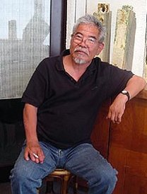
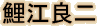
Koie Ryoji
INTRODUCTION
"Go ahead, ask me anything you want," he said. His
loud and bright voice struck me and the whole room brightened up.
This man in front of me, with the cheerful smile on his sun-tanned
face, this is the pottery master-star, Mr. Koie Ryoji. "Ha,
ha, ha, good, good, and?" he says with warmth, making me feel
at ease. It turns out he was doing all this to help me loosen up
and relax a bit.
In the world of practical pottery (e.g., chawan, tsubo, plates),
Koie Ryoji has developed his own realm, beyond any prejudiced concept
of pottery or what it means. In the world of modern art, moreover,
he has been sending important messages to society through other
artistic endeavors, such as his "Returning to Clay" series.
Koie takes pleasure in freely exploring the two realms. With a flexible
attitude and a power beyond national borders -- which does not allow
him to stay in one place very long -- people cannot help being attracted
to him.
Yes, now I get it! I know that's the reason why young wannabe-potters,
not only Japanese, but also from other countries, gather around
him; the reason why many potters make Koie-like works unintentionally.
I understand the reasons so well now.
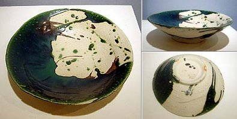
Impressive Large Plate
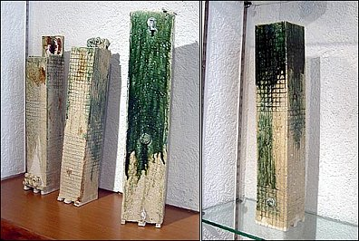
Series entitled Mizaru, Iwazaru, Kikazaru
(see no evil, hear no evil, speak no evil); background is NY 9.11
Exuding
an Interest in Living
Koie has exhibitions one after another. But, exhibitions
are not the only thing that keeps him busy.
Y: Koie Sensei !
K: YES!
Y: You are so well tanned.
K: I went to Hokkaido to make a monument and I worked outside
all the time for more then ten days.
Y: What kind of monument?
 K:
I dug a long groove -- about 10 centimeters wide in the ground,
swiftly poured in liquid aluminum, and set an aluminum column in
the groove standing up. K:
I dug a long groove -- about 10 centimeters wide in the ground,
swiftly poured in liquid aluminum, and set an aluminum column in
the groove standing up.
Y: So, it isn't yakimono, is it?
K: Well, it is yakimono. The aluminum was about 700 degrees
centigrade, so the ground got burned. Therefore, it was yakimono.
It is just a standing column, but it left a scorch mark on the ground.
That's like "Scar Art."
Y: Sounds very poetic. Where is it?
K: Atsuta-mura (village). It is a small village with a population
of 3,000, located north of Ishikari city. Nice place it is. It's
by the Japan Sea, so a lot of driftage shows up from Russia and
Korea. Looking at all that stuff is interesting! I'm the type of
guy who finds anything interesting.
Y: But still, doing that at such a busy time, with all your
exhibitions.
K: I am crazily busy. As such, I am happy and thankful. I
don't mind being so busy as being too fragile to be broken.
Y: When do you sleep?
K: Well, I sleep when I'm sleepy, and I drink when I want
to. Those times are what I call my sleeping hours. I used to sleep
three times a day. You know, I don't work without drinking. So I
do my job while drinking, and when I get tired from drinking too
much, I go to bed. Then, when I wake up, I start drinking and working.
I kept repeating that. In that respect, I felt like I lived three
times more than a regular person. I used to work that much. I don't
work as hard these days, but I think it's ok anyway. As a result,
my sleeping hours are totally messed up. There are people who have
decided to sleep six to eight hours. But, I believe it doesn't have
to be decided. In the last firing, I fired for 11 days continuously,
so I hardly slept. "What is being awake?" I sometimes
wonder. I know people who are awake yet sleeping. I sometimes find
a guy eyes-open who must be sleeping for Christsake. Then, there
are people who are sleeping, while being awake, who are all ears.
Y: Ummm, one can never be too careful.
K: Yeah, yeah. Yet, I don't want to be obsessed with prejudices
or something. Once you are stuck with prejudices, it's over. It's
no fun just to live. You have to experience the fun of living.
New
York and September 11th
Koie works in a huge variety of styles -- white works, hikidashi-guro
(black), sometsuke (overglazed porcelain), yakishime and more. I'll
focus on his green works, like his Oribe.
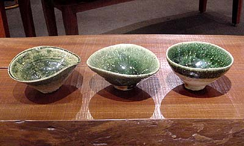
They are all green, yet have different personalities.
They dance and play. These chawan are alive.
Y:
I would like to introduce Koie's works as recently exhibited at
the Akasaka Inui Gallery, where this interview took place. Wait,
I have to mention this before continuing -- his newly built anagama
(single-chamber kiln) in his hometown of Okujo Amagasa (in Tokoname,
Aichi), made the news because of its size, 20 meters in length.
It's called the Muteppo-gama, or Temerity Kiln. It was intentionally
made to fire ceramics uneven. That is very Koie-ish, what one might
expect from this artist. Since I had just recently seen another
Koie exhibition, one displaying big tsubo made at that kiln (I vividly
remember some brownish tsubo), I was expecting similar works at
the current exhibit, especially in light of the interest sparked
by the Muteppo-gama. Yet, the space looked like this:
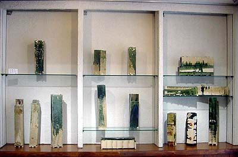
Betraying my expectation of finding brownish works,
the space was filled with green. Betraying my expectation of
seeing round shapes, it was full of edgy and linear works.
Y:
I expected that you would go with brown works.
K: I knew it. It is my job to betray people's expectations.
Almost all my clients look forward to seeing "How is he going
to betray us this time." When one thinks, "Koie must go
like this," they find totally different things.
Y: I see green linear yakimono standing side by side. What
is that expressing? I first thought it was something like a forest,
but the more I look, it begins looking like Manhattan.
K: It is Manhattan! You are right!
Y: Is it? Bingo?
K: Bingo! September 11th was the source. Wow, you got it!
| 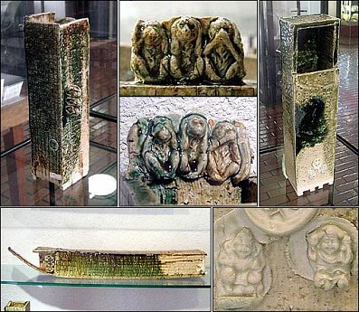 |
| Koie's
depiction of the group of buildings in Manhattan
where the terrorist attacks took place. His deep
green copper glaze falls on the unspeaking building.
The title of all these works is "Mizaru,
Iwazaru, Kikazaru." Three Nikko monkeys,
the Mallet of Luck, Daikoku-ten (The God of Wealth
and Farmers), and Ebisu (God of Commerce) can
be seen between the Manhattan buildings standing
side by side. They look like decorative objects
at first glance, but they can be used as vases.
They were fired in a gas kiln. |
|
|
Y:
What is your message in the title, "Mizaru, Iwazaru, Kikazaru?"
K: There are Mizaru, Iwazaru, Kikazaru (see, speak, hear
no evil), but there is no Tsukurazaru, or "make no evil."
Rather than seeing or speaking or hearing unnecessary things, one
should instead be involved in creating. The hidden meaning of the
pieces is that one can do what they want to, instead of only listening
to what someone else is saying.
Y: I can see a Mallet of Luck, Daikoku-ten, and even Ebisu.
Those are all good luck talisman.
K: The rush of business! (laughs)
Y: Making a wish or having one's dream come true?
K: It is all up to how one interprets it. I do not care.
Y: Is this green glaze Oribe?
K: It's better to think of it as a copper glaze. People call
this an Oribe glaze, but one can think more simply, more loosely.
Copper glazes include green glaze, shinsha (red) glaze, kinyo (grayish)
glaze, etc. Copper is the uniform material for all those glazes,
so you can include everything and think of it as "copper glaze."
And among Oribe, there are many kinds, like kuro (black) Oribe,
aka (red) Oribe, and Shino Oribe. Thus, if you stop referring to
Oribe so simply, some would say, "You know about this very
well. What a smart person you are!" (laughs)
Y: I will start using the word "copper glaze" from
now on! And now, looking at this piece (photo below), what is this
reddish thing?
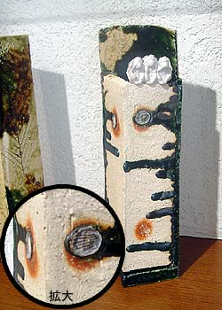
K:
The bases of the marks are shells. Those spots turn out red because
the shells contain salts. This technique has been used since very
old times. Ancient people were very flexible in their ways of thinking
and they took risks. As civilization progressed and living got more
convenient, people started thinking in narrower ways. People have
become shabby.
Y: The horrible terrorist attacks of September 11 in New
York changed the whole world. Why did you choose this time, a year
after the attacks, to make these pieces?
K: It's not like something was finished yesterday, and I
make something today. I think it's better to make something after
the incident sinks in. I've made series like "No More Hiroshima,
Nagasaki" and "Chernobyl." I do believe those things
should not be created right after the incidents. In between, I have
listened to many kinds of music, seen dances, plays, and fashion
shows, and read books. Creating something for me is like having
those accumulated things blossom.
Y: It requires an aging time.
K: Right, I have to have things ferment within myself.
Y: You are doing workshops all over the world. Where were
you at the time of the attacks?
K: I was in Korea at that time. My American friend from New
Jersey was with me, and he got white-faced and could do no work
at all. I suggested to him, "Hey come to Japan. You can work
with me for a while," because he could not get back to America
for the time being. But it didn't work out. He was so terrified.
That was quite sad.
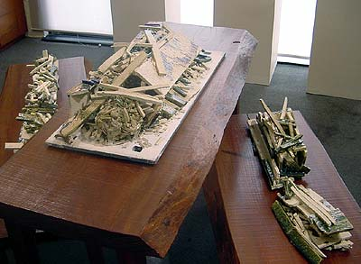
From the "Mizaru, Iwazaru, Kikazaru" series.
What's left was a mass of rubble. I burst into tears.
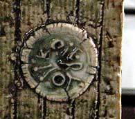In
the 60's
When the World was a Fun Place
Y: As I see your chain of performances, I am reminded of John
Lennon and Yoko Ono. What do you think about them?
K: They're wonderful. So were the Beatles. The long and short
of it is that the 1960s was a most interesting and changeable period.
Students acted like real students and had the energy to change the
world. The same can be said of the world of art. I came out at that
time. After all, a person needs to be broken up, proliferating in
other words, maybe? It is ok to change your mind day after day.
I think that is what makes one a person. It is also very human that
one thinks on the same subject continuously, but it is better to
have many different thoughts. So, if one makes pottery, one has
to do other things (for example, free jazz) as well or it won't
work out.
Y: Talking about jazz, musicians often play ad-lib. The exquisite
feeling radiating from jazz is very similar to your physical rhythm
when you are creating ceramics.
K: I think they are quite similar. I agree with what you
mentioned about ad-lib. I do play piano.
Y: Do you? Piano?
K: Yeah, everybody is surprised because I 'm so good at it.
Everybody lets loose a "ha, ha, ha." This is how I act.
I teach at the university (Aich Prefectural University of Fine Arts
and Music). But, I go to the university on the condition of not
teaching, so I do not teach! There is nothing that someone like
me can teach brilliant students. Yet, they are such turkeys. They
are worried like, "What should I create?" or "How
can I make a hit?" They should be creating something if they
have time to worry. That's what I think.
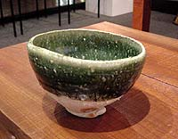Overseas
Workshops
Y: You've had workshops in eight different countries so far.
How do you deal with the language problem?
K: Well, as long as we create something, we do not need words.
Our creations stand between the words. So, between "ha"
and "well" is a piece of work. So, I create works without
words, and when I wave my hand, a drink will come without me saying
"Give me a drink."
Y: I wonder how it works so well. (laughs)
K: That's how it is. Yes! (emphatically)
Y: In the workshop, do people show their works to each other
like "this is my way?"
K: Uh-huh. When I went to a restaurant in Israel, the master
of the restaurant was better at the wheel than I. Saying, "Get
out of the way, I'll do it," he made a huge tsubo in seconds.
He used to be a potter. That made the whole thing interesting.
Y: Was he that good?
K: He just had skill. What's more important is what else
is in the work. There is no meaning in just creating something.
There are many handy people around, and just being a handy person
is not good enough. I feel sorry for those skillful people. They
do everything smoothly so therefore they don't convey feelings in
their work.
Y: To finish here, could you give us your words on how to
have more GENKI (vigor) in Japan?
K: I began thinking about what Japan is when I was making
ceramics outside Japan. I want to love this country, but cannot
love it as I'd like to. I don't know how to express it. I want my
work to go beyond borders. We've had enough of being swayed by other
countries. War occurs because there is a country. If there were
no countries, there would be no wars.
Y: I see. You are right.
(All of a sudden, Koie grabbed the tape recorder and began speaking
like a radio announcer.)
K: Well, this is how I am. I appreciate all of your continuous
support. I will talk to all of you face to face. Everybody all over
Japan, please be well. Everybody in the world, be well too.
People present in the gallery burst into laughter.
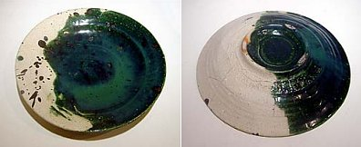
Koie
Ryoji Profile
1938 Born in Tokoname, Aichi
1957 Graduated from Tokoname High School, Ceramic Art Part
1962 Entered Tokoname Ceramic Art Institute
1963 Won award at Asahi Ceramic Art Exhibition
1972 Won "honors" at the 3rd Vallauris International Ceramic
Biennale
1980 Became a member of the International Academy of Ceramics (IAC)
1992 Became professor at Aich Prefectural Univ. of Fine Arts and
Music
1993 Won award of Japan Ceramic Society
1994 Moved a kiln to Kamiyahagi-cho, Ena-gun, Gifu
2002 Built 20-meter anagama in Amagasa, Okujo, Tokoname City
Creates his artwork at various places and holds many exhibitions
(both individually and with groups).
Related Links
Exhibition
of recent works by Koie Ryoji
Photo tour
Exhibit of award-winning Japanese Ceramists
Who's Who
of Japanese Pottery
More Articles
|